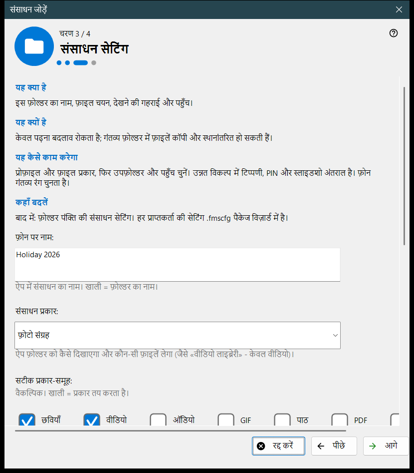
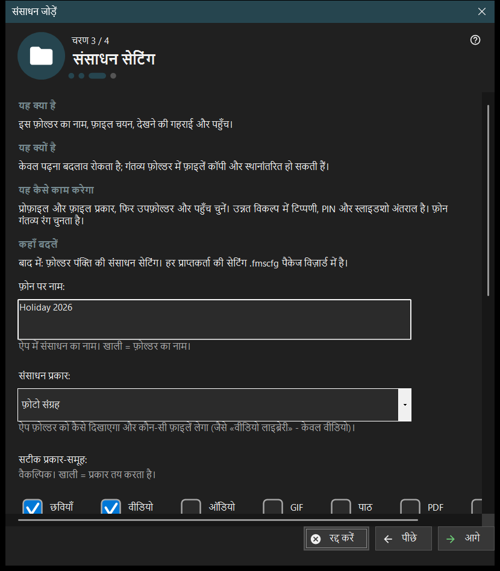

संसाधन जोड़ें
यह किस लिए है
एक छोटा विज़ार्ड जो एक साझा संसाधन जोड़ता है: एक फ़ोल्डर या पहले से खुली FileDO डिस्क। यह जोड़ें मेन्यू के संसाधन जोड़ने का विज़ार्ड.. विकल्प से और पहली बार चलाने वाले प्रवाह से खुलता है, और संसाधन को साझाकरण सूची में जोड़कर समाप्त होता है।


इस क्रम में
- पढ़ें कि संसाधन क्या है और आगे दबाएँ।
- फ़ोल्डर चुनें.. दबाएँ और फ़ोल्डर चुनें।
- संसाधन सेटिंग पृष्ठ पर नाम, प्रकार और पहुँच तय करें।
- सारांश देखें और समाप्त दबाएँ।
- अंतिम पृष्ठ के बटनों से QR कोड दिखाएँ या सेटिंग्स खोलें।
तत्व
संसाधन क्या है
संसाधन एक फ़ोल्डर या खुली FileDO वर्चुअल डिस्क है जिस तक व्यूअर इस पीसी के रास्ते पहुँचता है। फ़ाइलें कंप्यूटर पर ही रहती हैं; फ़ोन कनेक्शन के ज़रिए उन्हें देखता और कॉपी करता है, और सूची में निशान वाला फ़ोल्डर ही परोसा जाता है।
फ़ोल्डर चुनना
फ़ोल्डर चुनें.. सामान्य फ़ोल्डर चयनकर्ता खोलता है और FileDO डिस्क.. खुली डिस्क की सूची देता है। जो फ़ोल्डर पहले से सूची में है, उसे यह संदेश देकर अस्वीकार किया जाता है: यह फ़ोल्डर पहले से सूची में है। FileDO डिस्क वही चुनें जो पहले से खुली हों; विज़ार्ड उन्हें न बनाता है न माउंट करता है।
संसाधन सेटिंग
फ़ोन पर नाम, प्रकार, सटीक मीडिया-समूह, स्कैन की शर्तें और पहुँच। केवल पढ़ने योग्य बदलाव रोकता है; गंतव्य फ़ोल्डर में फ़ाइलें कॉपी और मूव की जा सकती हैं। उन्नत विकल्प में टिप्पणी, PIN और स्लाइडशो अंतराल हैं। गंतव्य का रंग फ़ोन चुनता है।
संसाधन और अगले कदम
समाप्त सेटिंग सहेजता है और संसाधन जोड़ता है; इससे पहले रद्द करने पर कुछ नहीं बदलता। अंतिम पृष्ठ बताता है कि संसाधन परोसा जा रहा है या नहीं। सर्वर बंद हो तो फ़ोन उसे अभी नहीं देख सकता; परोसना पुष्ट न हो तो सेटिंग जाँचें। QR कोड दिखाएँ एक्सेस कोड खोलता है, सेटिंग.. प्रबंधक की सेटिंग्स खोलता है और बंद करें विज़ार्ड से बाहर निकलता है।
प्रबंधक सेटिंग · SFTP साझाकरण सेटिंग · एक्सचेंज सर्वर सेटिंग